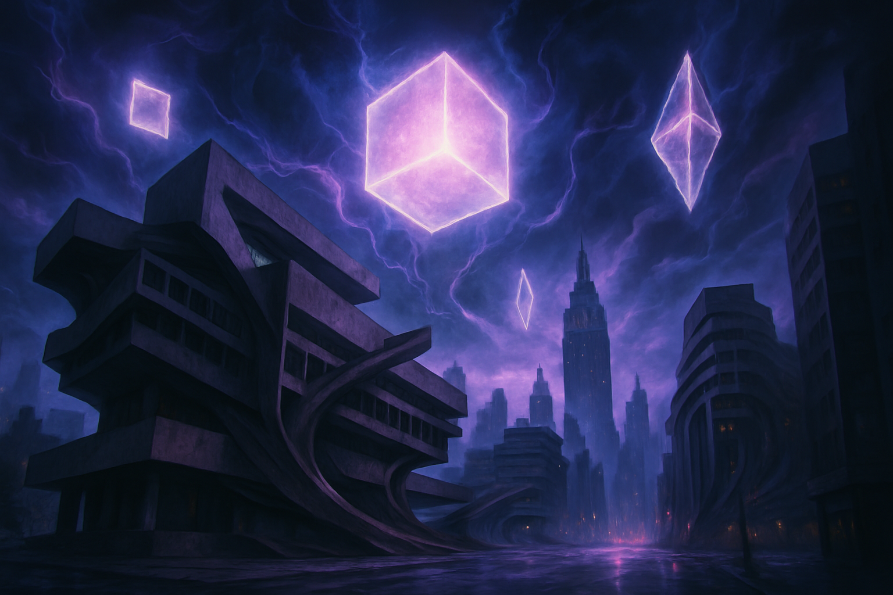

1位

Control Resonant
2019年の傑作『Control』の正統続編。前作の主人公ジェシーの弟、ディランが異次元の脅威に侵食されたマンハッタンへ乗り込む。シェイプシフトする近接武器「Aberrant」を使った爽快なメレーコンボが核心で、前作のシューター要素から大きく進化したアクションRPGへと生まれ変わった。Summer Game Festの試遊版では超常現象の世界観と高速コンバットの完成度に絶賛の声が続出している。発売は2026年9月24日。
おすすめ理由：Remedyが7年ぶりに放つ渾身の続編。前作未プレイでも楽しめる作りで、2026年後半最大の注目作の一つ。